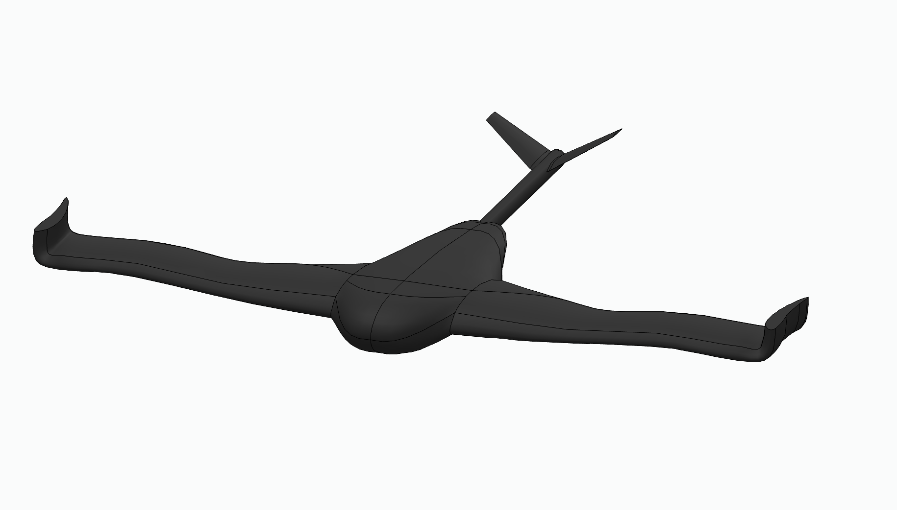

Tri-Tilt-Rotor SAR VTOL Drone (Diploma Thesis)
BVLOS Search & Rescue 3-rotor VTOL drone built under AustroControl SORA SAIL II safety guidelines. Dual Pixhawk FMU + Nvidia Jetson ROS2 swarm architecture with thermal IR AI person detection and live GPS coordinate broadcasting.
Project Timeline & Milestones
Formed 2-person team for HTL Diploma Thesis (Diplomarbeit). David selected as team lead for avionics, software, SORA safety, GCS ground control station, and military partner contacts.
Authored Technical Design Document (TDD) adhering to AustroControl SORA SAIL II guidelines for BVLOS operations in Alpine search & rescue terrain.
Developing decentralized ROS2 companion computer architecture on Nvidia Jetson towards 2028 graduation. In active talks with the Austrian Armed Forces (Österreichisches Bundesheer) for testing sites and sponsorship.
1. System Division & Team Responsibilities
Our team split responsibilities cleanly: my teammate focuses on carbon composite chassis mechanics, propulsion sizing, power distribution, and the 90° tilt mechanism. As team lead, I engineer all avionics, electronic redundancy, SORA safety compliance, ROS2 companion software, PID mixers, GCS ground control station, and military partner contacts.
2. Vehicle Specifications & Operational Profile
The Tri-Tilt-Rotor SAR VTOL drone is engineered for extreme Alpine conditions where traditional multirotors lack range and fixed-wing aircraft cannot land:
- Mass & Airframe: 15 to 20 kg total takeoff mass with a 3.0-meter wingspan for efficient long-range gliding.
- Flight Speeds: Top speed of 130 km/h with an efficient cruise speed of 85 km/h.
- Operational Ceiling: Operational search altitude between 120m and 400m AGL, with a maximum travel altitude capability up to 4,000m MSL for mountain ridge crossings.
3. Thermal IR AI Person Detection & Jamming-Safe Navigation
Designed for harsh Alpine search & rescue operations, the drone carries a thermal IR camera streaming to an onboard AI vision pipeline executing on the Nvidia Jetson companion computer. When a missing person is recognized, real-time GPS coordinates are broadcast back to ground emergency rescue teams. To counter Electronic Warfare (EW) and GPS jamming in remote mountains, an optical flow camera algorithm maps terrain features to bound position drift within ±2m without satellite signal.
4. SORA SAIL II Compliance & Military Partnership
Operating Beyond Visual Line of Sight (BVLOS) in Austria requires strict adherence to AustroControl SORA SAIL II safety guidelines. Our Technical Design Document (TDD) outlines dual-redundant flight control units (Pixhawk FMU), fail-safe parachute recovery systems, and encrypted telecommunications links. We are currently in active talks with the Austrian Armed Forces (Österreichisches Bundesheer) regarding specialized flight testing grounds and tactical sponsorship.
Technical Design Document (TDD)
AustroControl SORA SAIL II Draft Spec (PDF)
Project Media, Code & CAD Assets
CAD 3D concept renders, structural technical design document (TDD), and flight architecture schematics.
